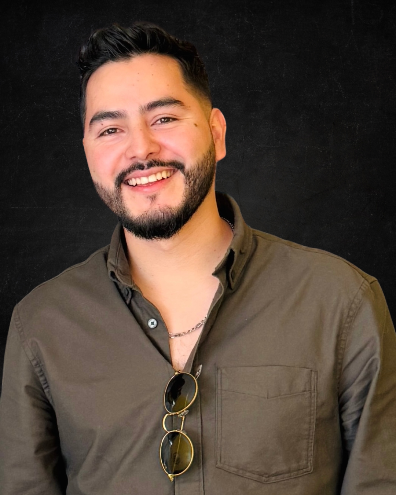

Producción Audiovisual
Contenido visual de alto impacto para plataformas digitales, reels, campañas y formatos multiplataforma.

COMUNICADOR • PODCASTER • CONSULTOR
Soy Onam Alexander Carvajal Castañeda, consultor en comunicación estratégica, productor audiovisual y creador de One Podcast.
Comunicador • Podcaster • Consultor
Soy Onam Alexander Carvajal Castañeda, consultor en comunicación estratégica, productor audiovisual y creador de One Podcast.
Soy Licenciado en Desarrollo Local y poseo una Maestría en Ciencias enfocada en la Gestión, Formulación y Evaluación de Proyectos. Integro la visión social con la ejecución técnica avanzada para transformar mensajes complejos en narrativas claras, profesionales y de alto impacto.
One Podcast es mi plataforma de conversación, análisis e historias de vida. Un espacio donde se conectan voces, experiencias y temas relevantes para la sociedad.
Contenido visual de alto impacto para plataformas digitales, reels, campañas y formatos multiplataforma.
Diseño de estrategias de comunicación para organizaciones, proyectos sociales, empresas e instituciones.
Talleres y cursos prácticos en creación de contenido, herramientas digitales y producción multimedia.
Registro audiovisual, contenido en tiempo real y piezas promocionales para eventos institucionales o corporativos.
Diseño, grabación, edición y publicación de podcasts para marcas, organizaciones e instituciones.
Relaciones públicas, notas de prensa, comunicación institucional, gestión de crisis y reputación.
Identidad visual, manuales de marca, logotipos y contenido gráfico profesional para redes sociales.
Si querés desarrollar una estrategia, producir contenido o llevar tu proyecto a otro nivel, podés contactarme directamente.